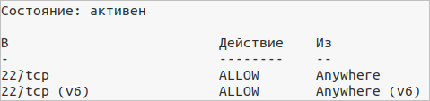
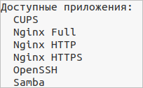
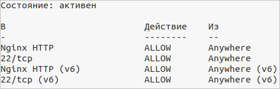
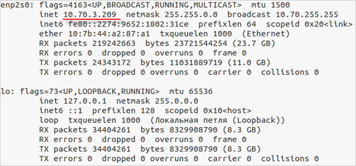
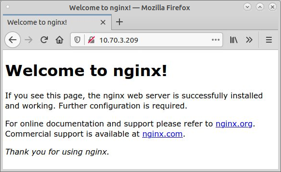
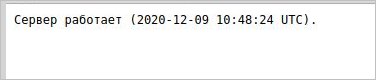
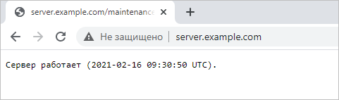

Установка и настройка обратного прокси-сервера nginx
В качестве примера мы будем использовать прокси-сервер nginx. Вы можете использовать любой другой обратный прокси-сервер (reverse proxy).
Установка и настройка в ОС Linux
Установка. Чтобы установить nginx выполните следующие действия:
- Запустите терминал;
- Войдите как пользователь root:
sudo -i - Чтобы установить nginx, выполните следующие команды:
apt update apt install nginx
Настройка. Чтобы настроить nginx выполните следующие действия:
- Проверьте, включен ли брандмауэр:
Сообщение Состояние: неактивен говорит о том, что брандмауэр выключен. В этом случае мы настоятельно рекомендуем его включить. Для этого выполните следующие команды:ufw status
После этого командаufw allow ssh ufw enable systemctl enable ufw systemctl start ufwufw statusдолжна выдать аналогичный результат, который говорит о том, что брандмауэр работает:
- Выведите настройки доступа для приложений, зарегистрированных в ufw:
ufw app list
Как видно из этого вывода, для nginx настроено три профиля:Далее мы покажем, как настроить трафик для порта 80. Если же вы хотите использовать защищенное соединение, тогда вам нужно будет разрешить профиль Nginx HTTPS и затем настроить SSL. Эти настройки выходят за рамки нашей документации, но вы можете прочитать об этом в дополнительной литературе, например тут: How To Secure Nginx with Let's Encrypt on Ubuntu 18.04.- Nginx Full — этот профиль открывает порты 80 (обычный, не шифрованный веб-трафик) и 443 (трафик шифруется с помощью TLS/SSL);
- Nginx HTTP — этот профиль открывает только порт 80 (обычный, не шифрованный веб-трафик);
- Nginx HTTPS — этот профиль открывает только порт 443 (трафик шифруется с помощью TLS/SSL).
- Разрешите профиль Nginx HTTP:
ufw allow 'Nginx HTTP' - Проверьте сделанные изменения:
ufw status
- После завершения процесса установки Ubuntu 18.04 запускает nginx автоматически. Чтобы проверить это узнайте IP-адрес своего
компьютера:
ifconfig
- Запустите браузер и в адресной строке введите:
В случае успеха вы увидите стандартную страницу nginx:http://10.70.3.209/
Настройка взаимодействия с сервером. Чтобы настроить взаимодействие nginx с сервером выполните следующие действия:
- Удалите стандартную настройку сайта из каталогов /etc/nginx/sites-available и
/etc/nginx/sites-enabled:
rm /etc/nginx/sites-available/default rm /etc/nginx/sites-enabled/default - Создайте собственную настройку сайта. Для этого запустите редактор vi:
vi /etc/nginx/sites-available/ess - Нажмите a, чтобы перейти в режим редактирования;
- Самый простой случай развертывания может выглядеть следующим образом:
- сервер доступен только через локальный сетевой интерфейс (localhost) (см. Сетевые настройки сервера);
- nginx установлен на том же компьютере, что и сервер;
- пользователи обращаются по протоколу HTTP.
#client_max_body_size 10000m; client_max_body_size 0; map $http_upgrade $connection_upgrade { default upgrade; '' close; } upstream httpServer { server 127.0.0.1:9090; } # HTTP Proxy Server server { listen 80; server_name server.example.com default_server; # HTTP location / { proxy_pass http://httpServer/; proxy_set_header X-Forwarded-For $proxy_add_x_forwarded_for; proxy_set_header X-Forwarded-Host $server_name; proxy_set_header X-Forwarded-Port $server_port; proxy_set_header X-Forwarded-Proto $scheme; proxy_http_version 1.1; } }Примечание: Директива client_max_body_size ограничивает максимальный размер файла, который можно передать через nginx. Значение 0 отключает такое ограничение. - Нажмите Esc, чтобы вернуть редактор в командный режим;
- Нажмите :x и затем Enter;
- Создайте символическую ссылку между каталогами:
ln -s /etc/nginx/sites-available/ess /etc/nginx/sites-enabled/ess - Перезапустите nginx:
systemctl reload nginx - Проверьте работоспособность сервера через внешний IP-адрес:
В случае успеха вы увидите стандартный ответ сервера:http://server.example.com/maintenance/server/v1/heartbeat
Сервер и nginx на разных компьютерах, HTTP
- Разрешите доступность сервера по одному из его IP адресов (см. Сетевые настройки сервера), например 192.168.0.3;
- Этот же адрес укажите в блоке upstream файла /etc/nginx/sites-available/ess (ссылка):
upstream httpServer { server 192.168.0.3:9090; } - Перезапустите nginx, если он уже запущен:
systemctl reload nginx
Подключение по HTTPS
- Сертификат сервера не должен быть самоподписанным;
- Корневой сертификат (CA) необходимо добавить в Trusted Roots (допустимо использовать самоподписанный сертификат). Это нужно сделать как на хосте сервера, так и на всех клиентских хостах.
В этом случае файл /etc/nginx/sites-available/ess должен выглядеть следующим образом:
#client_max_body_size 10000m;
client_max_body_size 0;
map $http_upgrade $connection_upgrade {
default upgrade;
'' close;
}
upstream httpServer {
server 127.0.0.1:9090;
}
# Redirect HTTP to HTTPS
server {
listen 80;
server_name server.example.com;
return 301 https://$host$request_uri;
}
# HTTPS Proxy Server
server {
listen 443 ssl;
server_name server.example.com;
# Ключ сертификата должен быть с путым паролем
ssl_certificate c:/app/nginx/proxy.crt;
ssl_certificate_key c:/app/nginx/proxy_free.key;
ssl_protocols TLSv1 TLSv1.1 TLSv1.2;
# Сообщить браузеру, что сервер доступен только по HTTPS
# Это предотвращает возможность перехода обратно на HTTP с атакой по назащищенному каналу
add_header Strict-Transport-Security 'max-age=604800';
# HTTP
location / {
proxy_pass http://httpServer/;
proxy_set_header X-Forwarded-For $proxy_add_x_forwarded_for;
proxy_set_header X-Forwarded-Host $server_name;
proxy_set_header X-Forwarded-Port $server_port;
proxy_set_header X-Forwarded-Proto $scheme;
proxy_http_version 1.1;
}
}Установка и настройка в ОС Windows
В тестовых целях вы можете установить и настроить nginx в ОС Windows.
Установка. Чтобы установить nginx выполните следующие действия:
- Скачайте дистрибутив nginx по этой ссылке: https://nginx.org/ru/download.html. Мы рекомендуем использовать основную версию (Mainline version);
- Разархивируйте дистрибутив в каталог, в котором будет находиться nginx. Возможная проблема: Если для доступа пользователей к nginx вы собираетесь использовать защищенное соединение SSL, то полный путь к каталогу, в который вы поместите nginx, не должен содержать русские буквы.
Чтобы настроить взаимодействие с сервером вам понадобится отредактировать файл conf\nginx.conf. Существует несколько вариантов в зависимости от сценария развертывания.
Сервер и nginx на одном компьютере, HTTP
- сервер доступен только через локальный сетевой интерфейс (localhost) (см. Сетевые настройки сервера);
- nginx установлен на том же компьютере, что и сервер;
- пользователи обращаются по протоколу HTTP.
http {
include mime.types;
default_type application/octet-stream;
#client_max_body_size 10000m;
client_max_body_size 0;
sendfile on;
keepalive_timeout 65;
map $http_upgrade $connection_upgrade {
default upgrade;
'' close;
}
upstream httpServer {
server 127.0.0.1:9090;
}
# HTTP Proxy Server
server {
listen 80;
server_name server.example.com default_server;
# HTTP
location / {
proxy_pass http://httpServer/;
proxy_set_header X-Forwarded-For $proxy_add_x_forwarded_for;
proxy_set_header X-Forwarded-Host $server_name;
proxy_set_header X-Forwarded-Port $server_port;
proxy_set_header X-Forwarded-Proto $scheme;
proxy_http_version 1.1;
}
}
}Чтобы проверить работоспособность сервера через внешний IP-адрес, выполните следующие действия:
- Запустите файл nginx.exe;
- Запустите браузер и введите в адресной строке:
http://server.example.com/maintenance/server/v1/heartbeat - В случае успеха вы увидите стандартное сообщение сервера:

Сервер и nginx на разных компьютерах, HTTP
- разрешите доступность сервера по одному из его IP адресов (см. Сетевые настройки сервера), например 192.168.0.3;
- этот же адрес укажите в блоке upstream:
upstream httpServer { server 192.168.0.3:9090; }
Подключение по HTTPS
- Сертификат сервера не должен быть самоподписанным;
- Сертификат CA необходимо добавить в Trusted Roots (допустимо использовать самоподписанный сертификат). Это нужно сделать как на хосте сервера, так и на всех клиентских хостах.
В этом случае блоки http и server должны выглядеть следующим образом:
http {
include mime.types;
default_type application/octet-stream;
#client_max_body_size 10000m;
client_max_body_size 0;
sendfile on;
keepalive_timeout 65;
map $http_upgrade $connection_upgrade {
default upgrade;
'' close;
}
upstream httpServer {
server 127.0.0.1:9090;
}
# Redirect HTTP to HTTPS
server {
listen 80;
server_name server.example.com;
return 301 https://$host$request_uri;
}
# HTTPS Proxy Server
server {
listen 443 ssl;
server_name server.example.com;
# Ключ сертификата должен быть с путым паролем
ssl_certificate c:/app/nginx/proxy.crt;
ssl_certificate_key c:/app/nginx/proxy_free.key;
ssl_protocols TLSv1 TLSv1.1 TLSv1.2;
# Сообщить браузеру, что сервер доступен только по HTTPS
# Это предотвращает возможность перехода обратно на HTTP с атакой по назащищенному каналу
add_header Strict-Transport-Security 'max-age=604800';
# HTTP
location / {
proxy_pass http://httpServer/;
proxy_set_header X-Forwarded-For $proxy_add_x_forwarded_for;
proxy_set_header X-Forwarded-Host $server_name;
proxy_set_header X-Forwarded-Port $server_port;
proxy_set_header X-Forwarded-Proto $scheme;
proxy_http_version 1.1;
}
}
}